1. ¿Qué significa DORA?
Discover, Offer, Request y ACK: búsqueda, oferta, solicitud y confirmación.
He configurado un servidor ISC DHCP y un cliente Kali: concesión dinámica, captura DORA, reserva por MAC y diagnóstico con registros reales.
He preparado un servidor Ubuntu y un cliente Kali en VirtualBox. El servidor conserva un adaptador NAT para instalar paquetes y acceder por SSH; el segundo adaptador se dedica al laboratorio. Kali utiliza su interfaz eth0 en la misma red interna.
| Elemento | Configuración |
|---|---|
| Red de laboratorio | 192.168.10.0/24 · red interna MCS-DHCP |
| Ubuntu · enp0s3 | NAT · 10.0.2.15/24 |
| Ubuntu · enp0s8 | IP fija · 192.168.10.1/24 |
| Kali · eth0 | Cliente DHCP · MAC 08:00:27:32:4d:1d |
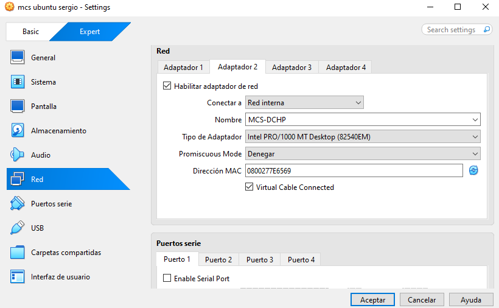
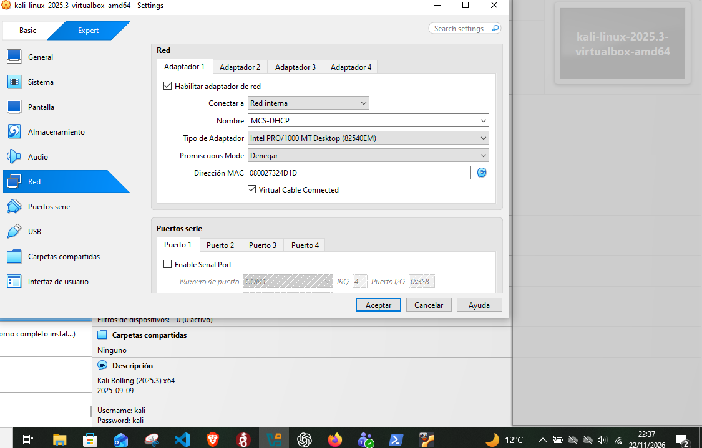
He conservado la configuración DHCP de enp0s3 y creado un archivo separado para la interfaz interna.
sudo tee /etc/netplan/60-dhcp-interna.yaml > /dev/null <<'EOF'
network:
version: 2
ethernets:
enp0s8:
dhcp4: false
addresses:
- 192.168.10.1/24
optional: true
EOFsudo chmod 600 /etc/netplan/60-dhcp-interna.yamlsudo netplan generatesudo netplan applyip -br addr show enp0s3ip -br addr show enp0s8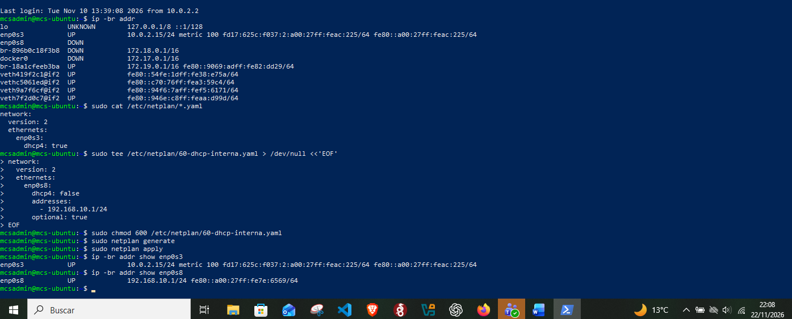
He instalado ISC DHCP y configurado su interfaz de escucha, rango de direcciones y opciones de red. El servicio DHCPv4 atiende únicamente en enp0s8.
sudo apt updatesudo apt install isc-dhcp-server -ysudo sed -i 's/^INTERFACESv4=.*/INTERFACESv4="enp0s8"/; s/^INTERFACESv6=.*/INTERFACESv6=""/' /etc/default/isc-dhcp-servergrep '^INTERFACES' /etc/default/isc-dhcp-serverINTERFACESv4="enp0s8"
INTERFACESv6=""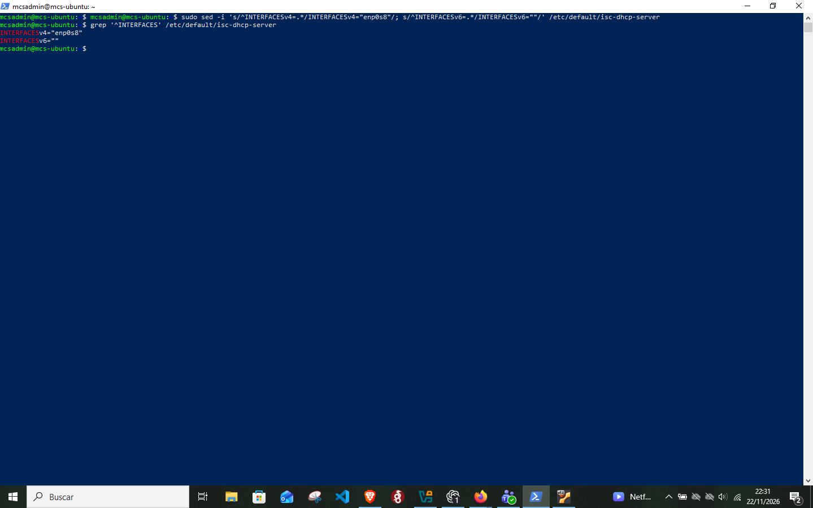
| Parámetro | Valor |
|---|---|
| Rango dinámico | 192.168.10.100 - 192.168.10.150 |
| Máscara y broadcast | 255.255.255.0 · 192.168.10.255 |
| Concesión por defecto | 600 segundos · 10 minutos |
| Concesión máxima | 7200 segundos · 2 horas |
| Puerta de enlace y DNS | No anunciados en esta red interna aislada |
La versión final de /etc/dhcp/dhcpd.conf incorpora la reserva comprobada en la misión 5. Las capturas muestran primero el rango inicial y después la incorporación de la reserva.
# Servidor DHCP de la practica 3 de Servicios en Red.
# Escucha en enp0s8, conectada a la red interna MCS-DHCP.
# Este servidor es autoritativo para la red del laboratorio.
authoritative;
# Duracion habitual de una concesion: 10 minutos.
default-lease-time 600;
# Duracion maxima de una concesion: 2 horas.
max-lease-time 7200;
# Desactiva las actualizaciones DNS dinamicas.
ddns-update-style none;
# Red interna y rango de direcciones dinamicas.
subnet 192.168.10.0 netmask 255.255.255.0 {
range 192.168.10.100 192.168.10.150;
option subnet-mask 255.255.255.0;
option broadcast-address 192.168.10.255;
# No anunciamos puerta de enlace ni DNS:
# esta red interna no dispone de esos servicios.
}
# Reserva para Kali por su direccion MAC.
# Fuera del rango dinamico para evitar solapamientos.
host kali-reservado {
hardware ethernet 08:00:27:32:4d:1d;
fixed-address 192.168.10.25;
}sudo dhcpd -t -cf /etc/dhcp/dhcpd.conf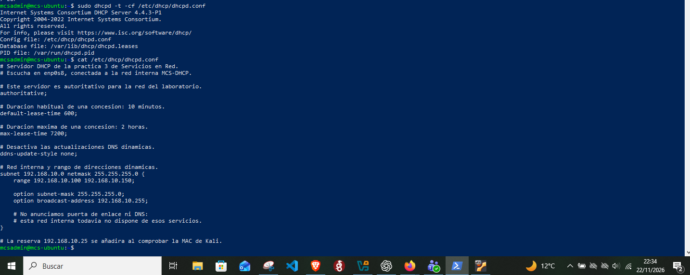
sudo systemctl restart isc-dhcp-serversudo systemctl status isc-dhcp-server --no-pager -lHe comprobado active (running) y la línea Listening on LPF/enp0s8 para la red interna.
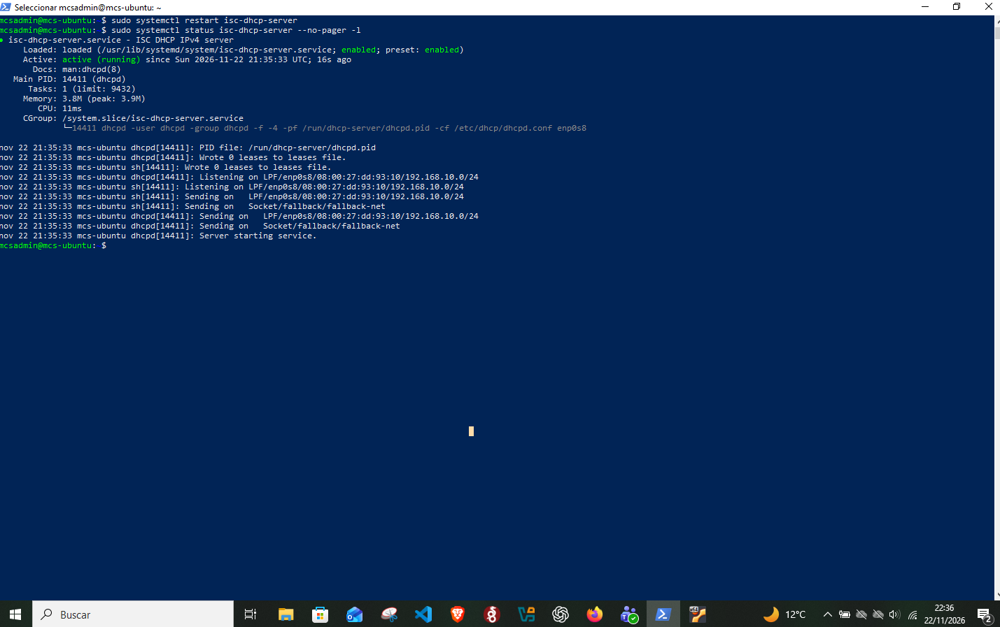
Al conectar Kali, el servidor le ha entregado 192.168.10.100/24, dentro del rango definido. He revisado la dirección, la MAC y la configuración DNS del cliente.
ip addr show eth0cat /etc/resolv.confnmcli device show eth0La dirección aparece como dynamic y tiene un tiempo de validez. La consulta a /etc/resolv.conf indica que el archivo no existe. No he anunciado DNS ni puerta de enlace en DHCP: la comprobación se realiza dentro de la red local.
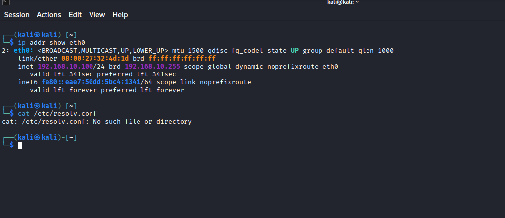
ping -c 3 192.168.10.1He recibido tres respuestas y 0 % de pérdidas. El cliente puede comunicarse con el servidor por su IP interna.
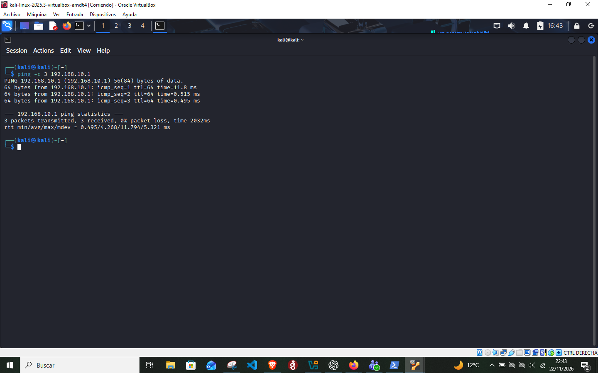
He abierto Wireshark en Kali y empezado a capturar en eth0. Para provocar una negociación nueva he utilizado el perfil temporal DORA-PRUEBA.
wiresharkEl enunciado indica el filtro bootp. En esta versión he utilizado el nombre dhcp, equivalente para analizar los mensajes DHCP. DHCP se desarrolló a partir de BOOTP; el nombre del filtro depende del analizador de Wireshark.
dhcpsudo nmcli connection down "Wired connection 1"sudo nmcli connection add type ethernet ifname eth0 con-name DORA-PRUEBA ipv4.method auto ipv6.method disabled connection.autoconnect nosudo nmcli connection up DORA-PRUEBA| Mensaje | Qué he observado |
|---|---|
| Discover | El cliente busca un servidor DHCP desde 0.0.0.0. |
| Offer | 192.168.10.1 ofrece 192.168.10.100. |
| Request | El cliente solicita la dirección ofrecida. |
| ACK | El servidor confirma la concesión. |
Los paquetes 21, 22, 23 y 24 muestran los cuatro mensajes con el mismo identificador de transacción: 0xe2459c15. Una renovación puede mostrar solo Request y ACK; por eso he generado una negociación nueva.
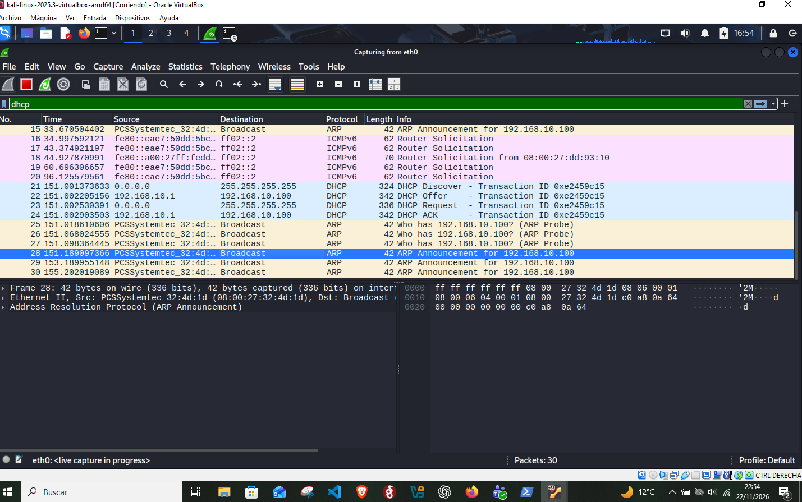
sudo journalctl -u isc-dhcp-server --no-pager -n 60He localizado solicitudes y respuestas asociadas a la MAC de Kali. Los registros relacionan cada negociación con la interfaz y la dirección asignada.
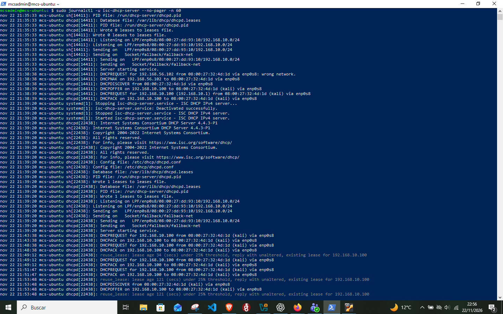
sudo cat /var/lib/dhcp/dhcpd.leasesHe comprobado la dirección 192.168.10.100, la MAC y el nombre del cliente. Los campos starts y ends indican los tiempos registrados. El archivo conserva entradas sucesivas; para una misma IP se interpreta la última declaración.
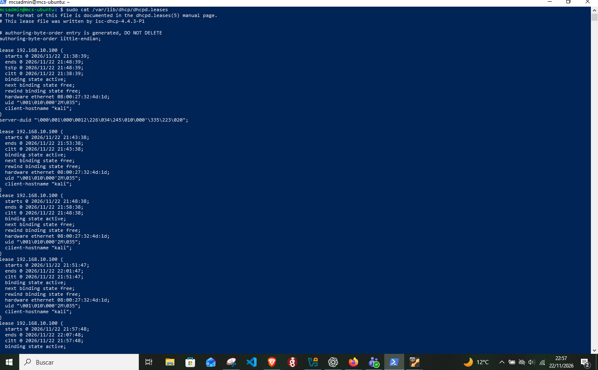
He añadido una reserva para entregar exactamente 192.168.10.25 a 08:00:27:32:4d:1d. La dirección está fuera del rango dinámico.
# Reserva para Kali por su direccion MAC.
host kali-reservado {
hardware ethernet 08:00:27:32:4d:1d;
fixed-address 192.168.10.25;
}sudo dhcpd -t -cf /etc/dhcp/dhcpd.confsudo systemctl restart isc-dhcp-server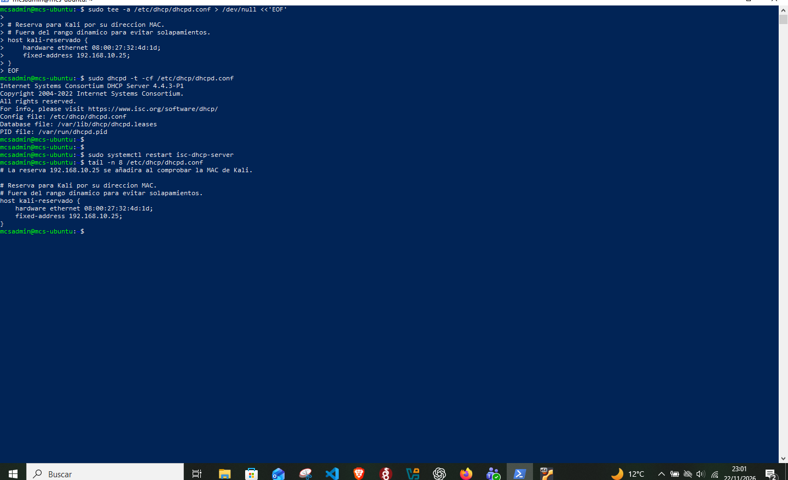
En Kali he reactivado el perfil para solicitar de nuevo su configuración.
sudo nmcli connection down DORA-PRUEBAsudo nmcli connection up DORA-PRUEBAip addr show eth0El cliente muestra 192.168.10.25/24 junto a la MAC reservada. La dirección sigue obteniéndose por DHCP.
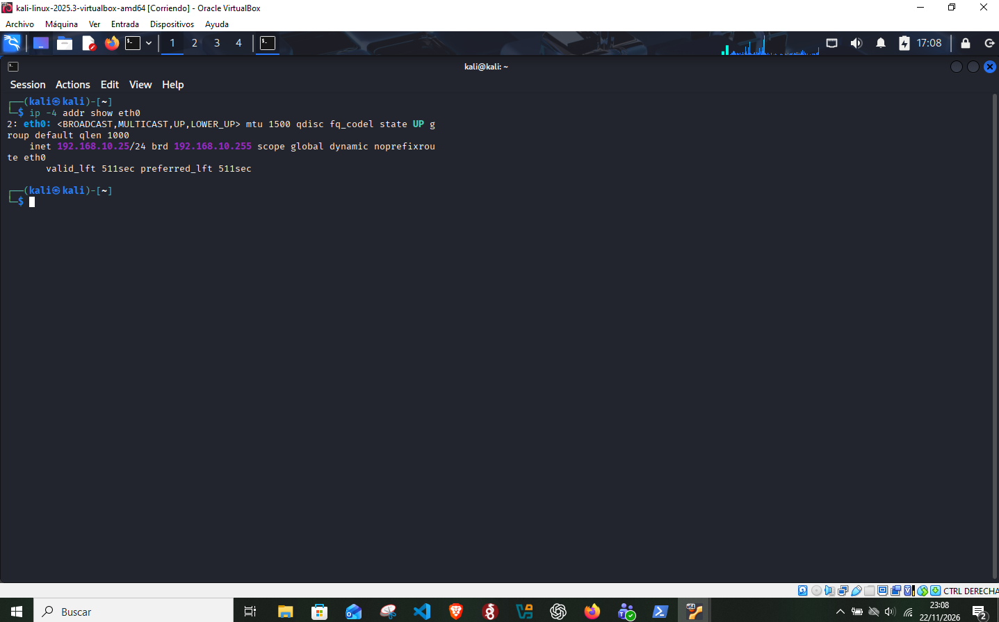
sudo journalctl -u isc-dhcp-server --no-pager -n 30He confirmado DHCPACK on 192.168.10.25 para la MAC de Kali. La reserva se comprueba mediante la configuración, la IP del cliente y el ACK del servidor.
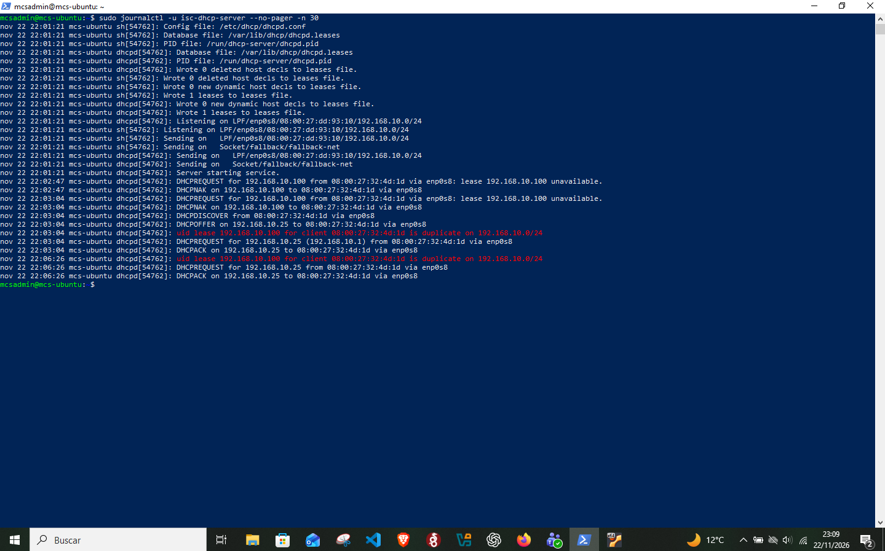
Después de añadir la reserva, Kali solicitó su antigua dirección 192.168.10.100. El servidor respondió con DHCPNAK. A continuación apareció una negociación nueva y se confirmó la 192.168.10.25. He comprobado el resultado al reactivar la conexión.
sudo journalctl -u isc-dhcp-server --no-pager --since "2026-11-22 22:02:00" --until "2026-11-22 22:04:00" | grep -E 'DHCPREQUEST|DHCPNAK|DHCPDISCOVER|DHCPOFFER|DHCPACK'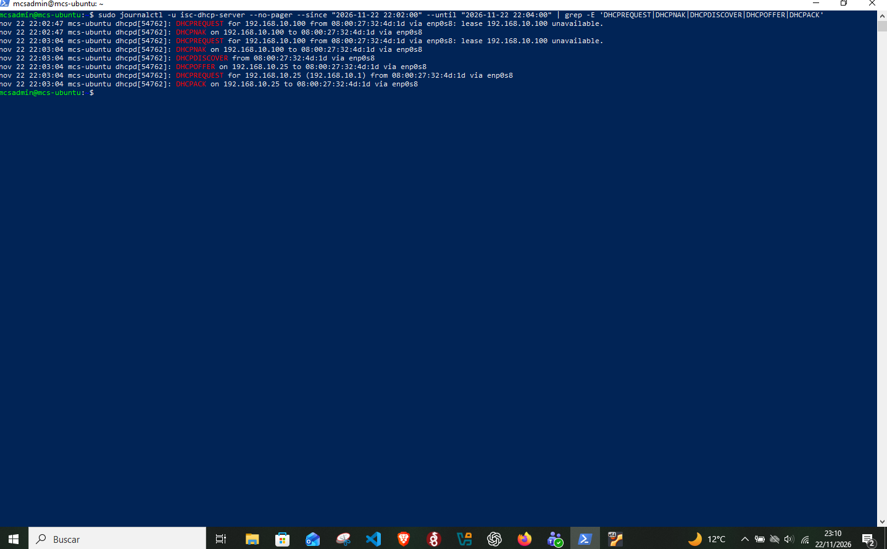
Discover, Offer, Request y ACK: búsqueda, oferta, solicitud y confirmación.
Para atender al laboratorio interno sin repartir direcciones por el adaptador NAT.
La reserva la decide el servidor por MAC; el cliente sigue solicitando su dirección por DHCP.
El servidor rechaza la dirección solicitada y el cliente debe volver a obtener una configuración válida.
No. Aquí comprueba comunicación por IP con el servidor; no se ha configurado resolución DNS.
He comprobado la concesión dinámica 192.168.10.100, el intercambio DORA y la reserva 192.168.10.25 para Kali.
He utilizado la configuración del servidor, las comprobaciones del cliente y los registros para explicar cada resultado. La memoria PDF reúne las cinco misiones y las capturas reales.